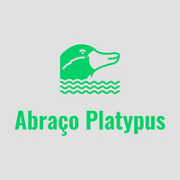
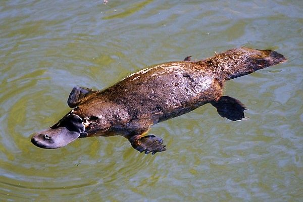
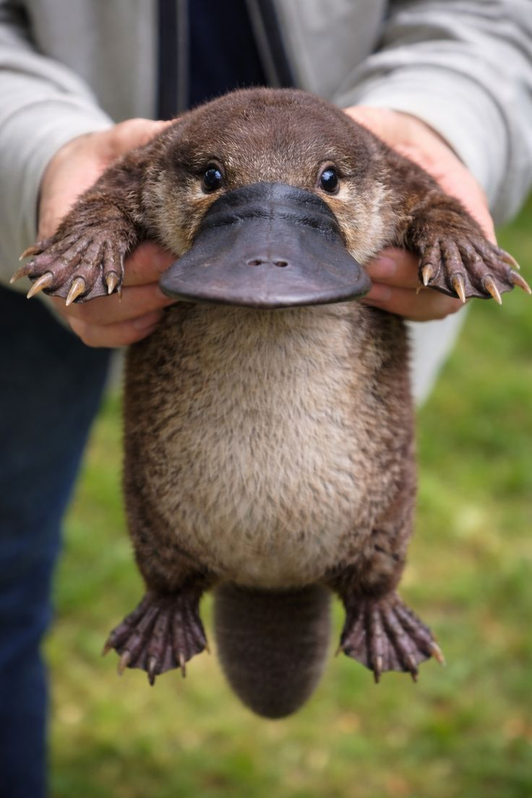

Espécie única
Apresentamos a biologia do ornitorrinco: além de mamífero que põe ovos, ele usa o bico para localizar alimento na água e se alimenta de invertebrados aquáticos.

CONHECER PARA PROTEGER
O Ornithorhynchus anatinus é um mamífero monotremado, grupo que reúne os únicos mamíferos que põem ovos. A espécie é endêmica da Austrália e depende de rios, córregos e outros ambientes de água doce.
Descubra mais
QUEM SOMOS?

O ornitorrinco vive principalmente em cursos d’água e lagos do leste da Austrália e da Tasmânia. É um animal de hábitos discretos, ativo ao longo do ano e, em geral, ao entardecer e à noite.
Esta página educativa reúne informações sobre a espécie, sua relação com os rios e os desafios para sua conservação.
O QUE FAZEMOS?
Apresentamos a biologia do ornitorrinco: além de mamífero que põe ovos, ele usa o bico para localizar alimento na água e se alimenta de invertebrados aquáticos.
Explicamos por que a espécie depende de sistemas de água doce e como a qualidade da água e as margens dos rios são importantes para seu habitat.
Destacamos ameaças documentadas, como perda de habitat, alterações no fluxo dos rios, poluição, predadores introduzidos e emalhe em lixo ou linhas de pesca.
COMO POSSO AJUDAR?
Reduzir o lixo nos cursos d’água, proteger a vegetação das margens e apoiar grupos locais de cuidado com rios são ações recomendadas por autoridades ambientais para proteger o habitat do ornitorrinco.
Ver iniciativas